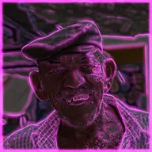

Poświata krawędzi

Wykrywa krawędzie warstwy i nadaje im neonową poświatę na przyciemnionym obrazie.
Ustawienia
| Ustawienie | Typ | Zakres | Domyślnie |
|---|---|---|---|
| Próg | Liczba | Od 0 do 1 | 0.1 |
| Rozmycie | Liczba | Od 0 do 300 | 12 |
| Rozprzestrzenienie | Liczba | Od 0 do 3 | 1.5 |
| Siła krawędzi | Liczba | Od 0 do 10 | 1 |
| Kolor | Kolor | – | #FF3CF0 |
| Kolor obrazu | Liczba | Od 0 do 1 | 0 |
| Mieszanie | Liczba | Od 0% do 200% | 0% |
| Odwróć | Włączone lub wyłączone | – | Wył. |
| Zabarwienie | Liczba | Od 0 do 1 | 0 |
| Kolor zabarwienia | Kolor | – | #FFFFFF |
| Gamma | Liczba | Od 0.1 do 5 | 1 |
| Jasność | Liczba | Od -1 do 1 | 0 |